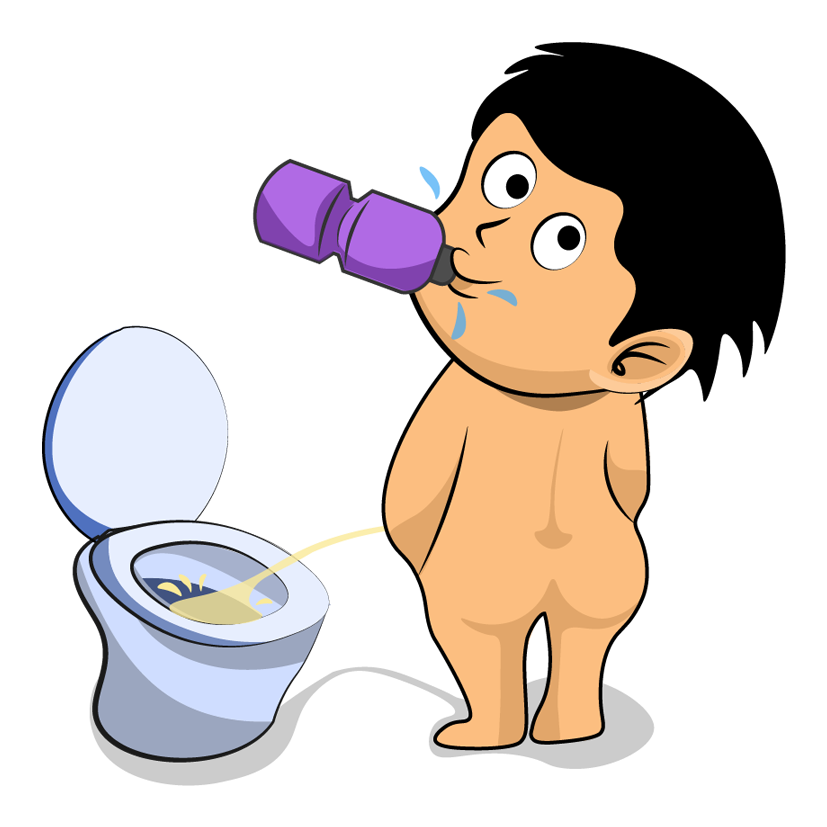

Loading
0%
KidneyARPee For Kids0
Click the Boy to Start!1
Let the camera read the marker.2
Click the Kidney to show the detail.For Chrome with Android or Desktop.
|
 |
|
Copyright © 2018. All Rights Reserved. The Chinese University of Hong Kong.
|
|
KidneyAR
Pee For Kids
Scroll and Click the Boy to Start!
Let the camera read the marker.
Click the Kidney to show the detail.
Alert
Please rotate your screen or resize your browser!
⚕️ Kidney
Water is essential because it keeps us hydrated and alive! Therefore, drinking water is important. We each have two kidneys. These are bean-shaped organs positioned on the two sides of your back and protected by the ribs and a thick surrounding layer of fat. Do you how your kidneys work?
⚕️ Ureter
In human anatomy, the ureters are tubes made of smooth muscle fibers that propel urine from the kidneys to the urinary bladder. In the adult, the ureters are usually 25–30 cm (10–12 in) long and around 3–4 mm (0.12–0.16 in) in diameter. Histologically, the ureter is lined by the urothelium, a type of transitional epithelium, and has an additional smooth muscle layer in the more distal one-third to assist with peristalsis.
|
HD
|
Label
|

|
|